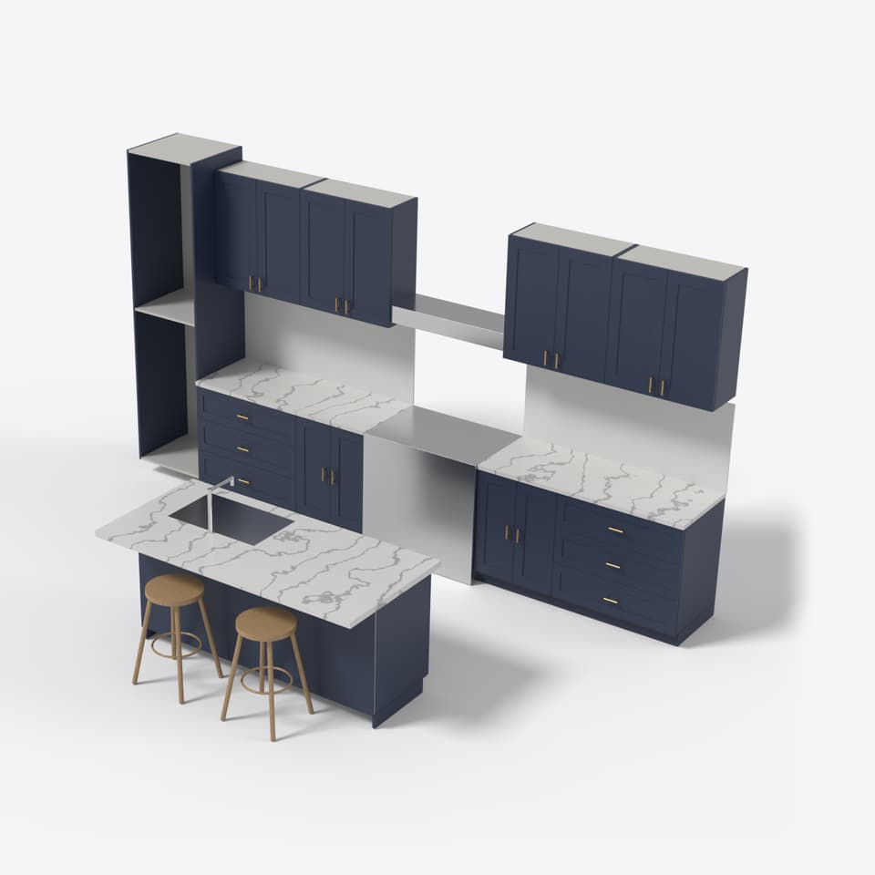

Mobilier et agencement sur mesure
Cuisines, dressings, meubles de bureau et d’accueil, mobilier scolaire : conçus en 3D, fabriqués et livrés prêts à poser.
Conception, fabrication, architecture et fourniture d’équipements.
Conception de maisons, d’immeubles de logements, d’écoles et de bâtiments publics et commerciaux, avec plans d’architecture, structure, lots techniques et rendus 3D.
Conception et fabrication de mobilier intégré sur mesure, d’équipements, de machines et de structures en acier, avec un dossier de fabrication complet pour chaque produit.
Fourniture de machines, d’équipements et de systèmes industriels complets, de packages clé en main, ainsi que de pièces de rechange et de composants critiques : identification, consultation fournisseurs, analyse comparative et livraison documentée.
Cuisines, dressings, meubles de bureau et d’accueil, mobilier scolaire : conçus en 3D, fabriqués et livrés prêts à poser.
Portes et portails, équipements de chantier et de transformation, abris, structures et kits de bâtiments en acier.

Plans d’ensemble et de détail, rendus 3D, nomenclatures, listes de débit et fichiers CNC pour chaque produit.
Villas, maisons de ville, immeubles à cour et tours de logements, pensés pour le climat de la RDC.

Écoles, agences bancaires, locaux recevant du public, usines et ateliers.

Plans d’architecture, coupes et façades, structure en béton armé, électricité, plomberie, climatisation, rendus 3D et métré estimatif.
Hydraulique, pneumatique, flexibles et raccords, transmission, filtration, électricité et automatismes : identifiés à partir d’une photo, d’une plaque signalétique ou d’un échantillon.

Machines, équipements et systèmes industriels complets, livrés à Kinshasa avec leur documentation, choisis sur leur mérite technique et leur coût rendu.